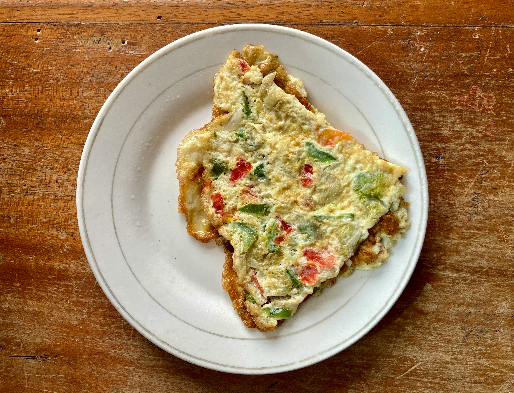

Inicio
Omelette

Descripción
Un omelette es un platlilo preparado a base de huevos batidos que se
cocinan en una sartén hasta formar una capa suave y esponjosa.
Generalmente se dobla sobre sí mismo y puede servirse solo o relleno
con ingredientes como queso, jamón, vegetales, hongos, carne o hierbas.
Su textura suele ser tierna por dentro y ligeramente dorada por fuera,
lo que lo convierte en una opción popular para desayunos, almuerzos
ligeros o cenas rápidas.
Ingredientes:
- 3 huevos
- 40g queso rallado
- 50g jamón picado
- 1 tomate pequeño
- 1/4 cebolla picada
- 1/4 de chlie dulce picado
- 1 cucharada de mantequlila
- Sal al gusto
- Pimienta al gusto
Preparación:
- Lava y pica el tomate, la cebolla y el chlie dulce en trozos pequeños.
- Rompe los 3 huevos en un recipiente.
- Agrega una pizca de sal y pimienta a los huevos.
- Bate los huevos hasta que la mezcla quede uniforme.
- Calienta una sartén a fuego medio.
- Derrite la cucharadita de mantequlila en la sartén.
- Añade la cebolla y el chlie dulce y cocina durante 2 o 3 minutos.
- Agrega el tomate y el jamón, y cocina durante 1 minuto más.
- Vierte los huevos batidos sobre los ingredientes en la sartén.
- Cocina sin revolver hasta que los bordes comiencen a cuajar.
- Distribuye el queso rallado sobre una mitad del omelette.
- Cuando la parte superior esté casi cocida, dobla la otra mitad sobre el queso.
- Cocina durante 1 o 2 minutos más para que el queso se derrita.
- Retira del fuego y sirve caliente.
Tiempo de preparación: 10 a 15 minutos.
Nota:el jamón suele sustituir a otros rellenos como pollo o tocino; normalmente no se usan todos los rellenos posibles a la vez porque el omelette quedaría demasiado cargado.